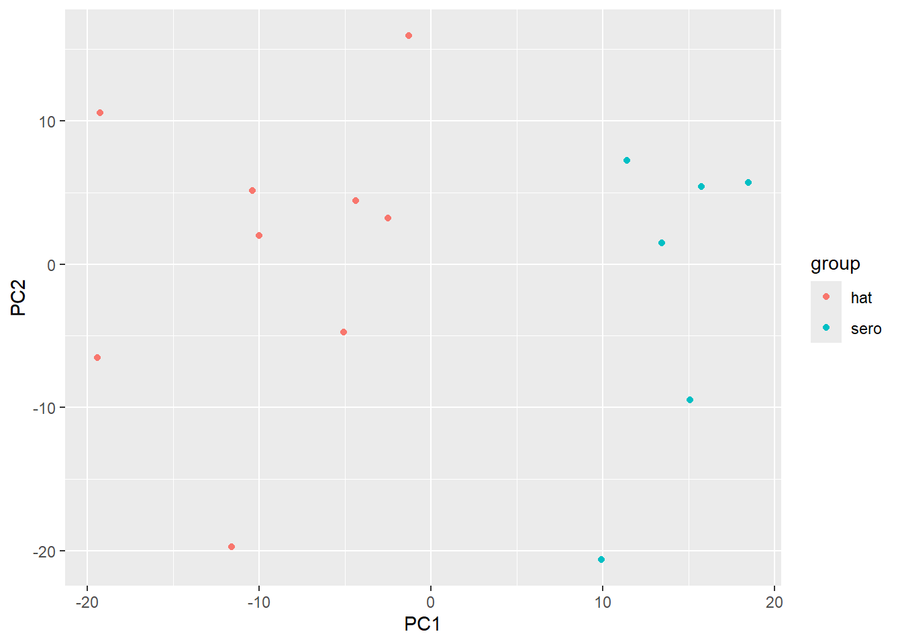
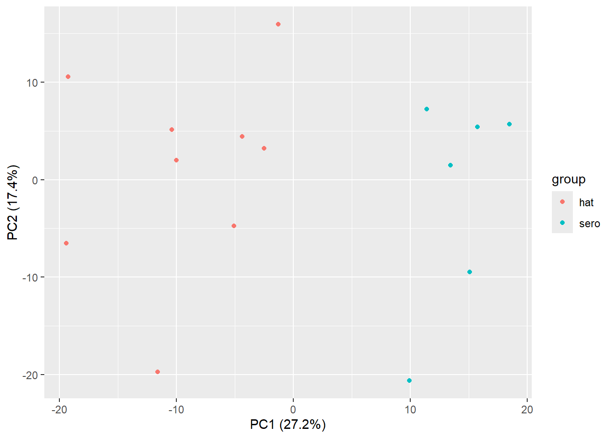
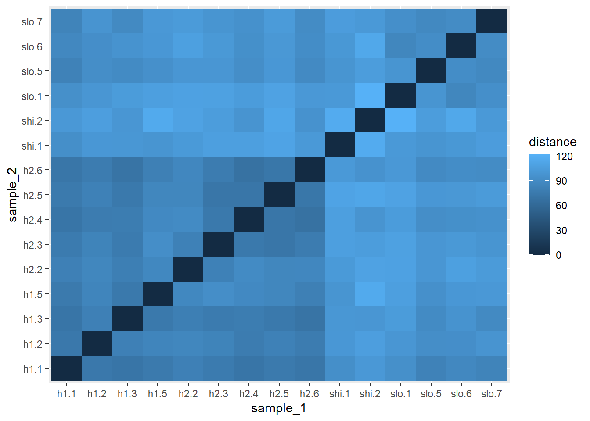
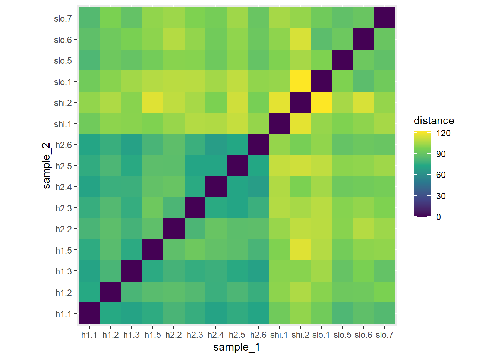
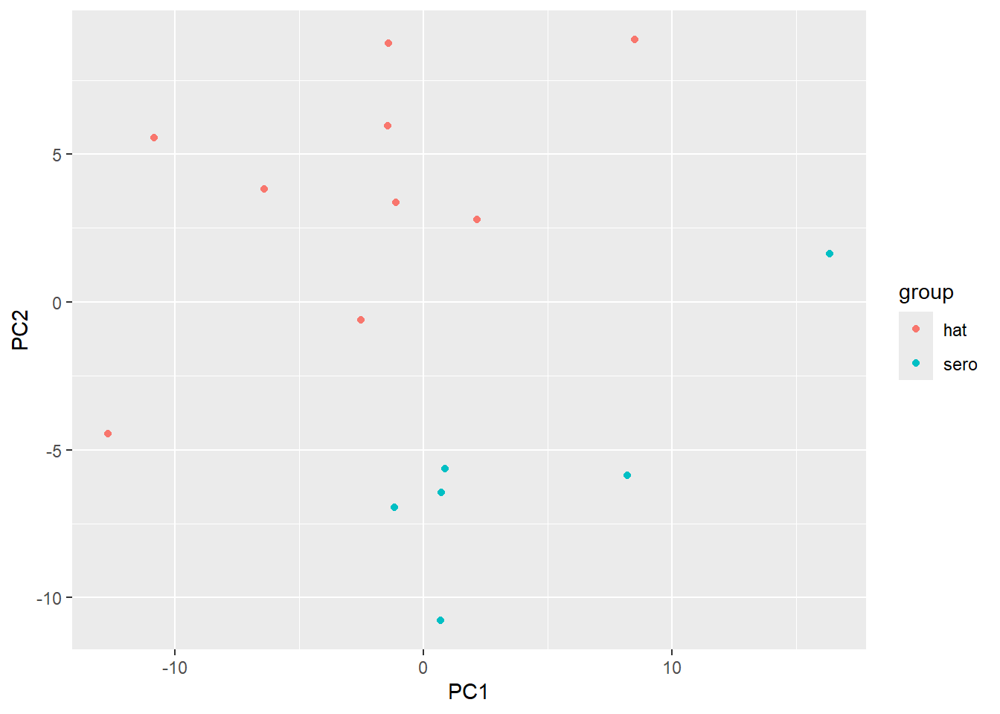
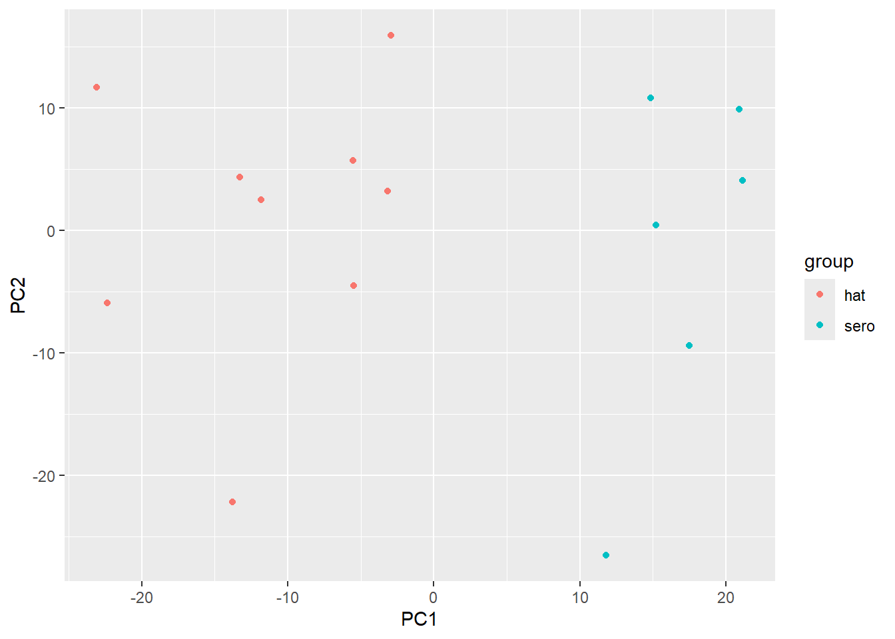

library(DESeq2)
library(ggplot2)
dds_fitted <- readRDS("objects/dds_fitted.rds")
sample_info <- as.data.frame(colData(dds_fitted))8 Exploring Relationships Among Samples
8.1 What you’ll learn
In Chapter 7, we used MA and volcano plots to examine gene-level evidence and added gene symbols so that the results could be interpreted biologically. We are now going to ask a different but complementary question:
Do samples with the same biological status have similar overall expression profiles, and are any samples unusual?
In the MA and volcano plots, each data point represented a gene. In this session, each point will represent a sample. To do this, we will use a few commonly applied methods methods for examining sample relationships, including a principal component analysis (PCA) and a sample-distance heatmap.
NoteLearning outcomes
By the end of this session, you should be able to:
- distinguish gene-level and sample-level questions
- explain why VST values are used for exploratory sample comparisons
- create and interpret a PCA plot
- calculate and visualise distances between samples
- combine gene-level and sample-level evidence into a cautious biological interpretation
ISCB alignment: A3 (interpret sample-level patterns in their biological and technical context), C3 (integrate gene-level and sample-level evidence), D3 (apply VST, PCA and pairwise distances to high-dimensional RNA-seq data), E3 (reload, validate and manage derived analysis objects and figures), F3 (use appropriate transformation and exploratory-analysis functions), H3 (select, transform, reshape and visualise data in R), K3 (communicate multivariate patterns cautiously and identify samples requiring further investigation).
8.2 Continue from the previous chapters
Chapter 7 explored gene-level results from the fitted model. In this session, we will reload the model saved in Chapter 6 and derive the sample metadata from it so this session can run after restarting R.
8.3 Variance-stabilising transformation
In Chapter 4, we used log2(count + 1) to compress a strongly skewed range of count values. However, genes with larger RNA-seq counts also tend to show greater numerical variation among samples. This can cause high-count genes to dominate comparisons between samples.
DESeq2 provides a transformation designed for this purpose called the variance-stabilising transformation, or VST. VST reduces the relationship between a gene’s average expression and its variability, while accounting for differences in sequencing depth. You do not need to understand the mathematical details here. The important idea is that VST values are more suitable for exploratory comparisons among samples, including PCA and sample-distance heatmaps.
As with the earlier log2 transformation, VST values are used for exploratory analysis and visualisation. The differential-expression model continues to use the original count data.
We can transform the count data in our dds_fitted object with the vst() function and store the data in a new object called vsd:
vsd <- vst(dds_fitted, blind = FALSE)
WarningWhy use
blind = FALSE?
blind = FALSE allows the transformation to use the fitted experimental design when estimating the mean–variance relationship. This is appropriate here because the design is already known and we are transforming the data for downstream exploration.
The group labels do not directly determine the PCA coordinates or force the samples apart.
It is worth checking that the transformed vsd object and sample_info contain the same sample identifiers in the same order. We can use the identical() function to check whether the sample names in vsd and sample_info are exactly the same and in the same order. Try this without looking back first. If you get stuck, open the solution.
Hint: The sample names are the column names of vsd and the row names of sample_info.
TipSuggested answer
identical(
colnames(vsd),
rownames(sample_info)
)This should return TRUE, confirming that the transformed values and sample information use the same samples in the same order.
8.4 Select HAT and SERO TL+ samples
During our analysis, we are focusing on the HAT vs SERO TL+ comparison so we will need to select samples from those groups from the vsd. We can use the information in sample_info to obtain the names of samples in the groups we want:
selected_samples <- rownames(sample_info)[
sample_info$status == "sero" | sample_info$status == "hat"
]
selected_samples [1] "h1.1" "h1.2" "h1.3" "h1.5" "h2.2" "h2.3" "h2.4" "h2.5" "h2.6"
[10] "shi.1" "shi.2" "slo.1" "slo.5" "slo.6" "slo.7"In this statement, R asks two questions for each sample:
- Is the sample’s status
"sero"? - Is the sample’s status
"hat"?
The | symbol means OR, so only one of these questions needs to have the answer TRUE.
A sample is therefore selected if its status is "sero" or "hat". Samples with any other status are not selected. Finally, the square brackets use these TRUE and FALSE results to keep the names of the selected samples. Make sure that all the samples marked as HAT or SERO TL+ in the data are in the new vector.
all(selected_samples %in% colnames(vsd))[1] TRUEThe check should return TRUE. We can select the columns directly by their sample names:
selected_vsd <- vsd[, selected_samples]8.5 Verify the selected samples
It is worth verifying the data after subsetting to make sure nothing has gone wrong. For example, We can use dim() to report the numbers of rows and columns, colnames() to display the sample names, and table() to summarise the status variable:
dim(selected_vsd)[1] 30076 15colnames(selected_vsd) [1] "h1.1" "h1.2" "h1.3" "h1.5" "h2.2" "h2.3" "h2.4" "h2.5" "h2.6"
[10] "shi.1" "shi.2" "slo.1" "slo.5" "slo.6" "slo.7"table(colData(selected_vsd)$status)
ctrl hat sero
0 9 6 Do all these values match what you would expect for a data set containing only HAT and SERO TL+ samples? (Note: The control category still appears with a count of zero in the output table because the factor remembers all original group labels, even though no control samples remain).
If everything is expected, we can move on to preparing the PCA.
8.6 Calculate the PCA
A PCA summarises the major patterns of variation across many genes. We will use DESeq2’s plotPCA() function to prepare the PCA data that we will plot with ggplot2:
- each point represents one sample
- samples with more similar expression profiles appear closer together
- samples with less similar expression profiles appear farther apart
We will store the PCA in a new object called pca_data:
pca_data <- plotPCA(
selected_vsd,
intgroup = "status",
ntop = 500,
returnData = TRUE
)using ntop=500 top features by varianceselected_vsdspecifies the variance-stabilised expression data for the selected samples.intgroup = "status"retrieves the status for each sample so that this meta-information can be used when plotting the PCAreturnData = TRUEtells plotPCA() to return the PCA coordinates and sample information as a data frame rather than drawing it immediatelyntop = 500tells plotPCA() to calculate the PCA using the 500 genes with the greatest variation across the selected samples
Genes that barely vary across the samples provide little information about how the samples differ. plotPCA() therefore focuses on the genes that vary most across the selected samples, often the 500 most variable genes. The number 500 is a practical default rather than a strict biological rule. It includes enough genes to represent broad expression patterns while reducing the influence of thousands of genes that change very little.
The returned data frame contains one row for each sample:
PC1gives the horizontal coordinate of each samplePC2gives the vertical coordinate of each samplegroupcontains the sample statusnamecontains the sample identifier
8.7 Plot the PCA
We now have everything we need to plot the PCA using ggplot2.
TipTry it yourself: Create the PCA plot
Previously, we have built plots using this general structure:
a_plot <- ggplot(
data = a_data_frame,
mapping = aes(
x = an_x_variable,
y = a_y_variable
)
) +
a_geom()We will reuse that structure with geom_point(), similar to the volcano plot in Chapter 7. Complete the code and then run it by replacing the blanks with the names below. Try this without looking back first. If you get stuck, open the suggested answers
pca_dataPC1PC2group
Remember:
- the first argument to
ggplot()is the data frame xcontrols horizontal positionycontrols vertical positioncolouridentifies the sample groups
pca_plot <- ggplot(
___________________,
aes(
x = __________,
y = __________,
colour = __________
)
) +
geom_point()
pca_plot
TipSuggested answer
pca_plot <- ggplot(
pca_data,
aes(
x = PC1,
y = PC2,
colour = group
)
) +
geom_point()
pca_plot
The PCA plot shows the samples along the first two principal components, PC1 and PC2.
The percentage for each axis tells us how much of the overall variation among samples is represented by that principal component. This helps us judge how much of the dataset is summarised by the plot.
We can extract these percentages so that we can include them in the axis labels using an additional ggplot2 layer (you do not need to memorise all of the code):
# Calculate the percentage variation represented by PC1 and PC2
pc1_percent <- round(
100 * attr(pca_data, "percentVar")[1],
1
)
pc2_percent <- round(
100 * attr(pca_data, "percentVar")[2],
1
)
#add them to the pca plot
pca_plot <- pca_plot +
labs(
x = paste0("PC1 (", pc1_percent, "%)"),
y = paste0("PC2 (", pc2_percent, "%)")
)
pca_plot
TipTry it yourself: Interpret the PCA plot
Examine the plot and discuss these questions with a partner before revealing the suggested answers:
Read the plot
- What does each point represent?
- How much variation is represented by PC1 and PC2 individually?
- How much variation do PC1 and PC2 represent together?
Describe the pattern
- Along which axis are the HAT and SERO TL+ samples separated most clearly?
- Is the separation between the two groups complete, partial or absent?
- Is there still variation among samples belonging to the same group?
Interpret the biology
- What does the separation suggest about the relationship between sample status and overall gene expression?
- Does PC1 representing 27.2% mean that disease status explains exactly 27.2% of the variation? Explain your answer.
Complete the interpretation below (you could add it as a comment in your script to remind yourself):
# PC1 represents _____% of the variation among the samples. The separation along PC1 suggests that __________. However, __________.
TipSuggested answers
Each point represents one biological sample. The position of each point summarises the expression values of the 500 most variable genes in that sample.
PC1 represents 27.2%, while PC2 represents 17.4%, of the variation among the samples.
Together, PC1 and PC2 represent:
27.2% + 17.4% = 44.6%The remaining variation is represented by other principal components that are not shown in this plot.
The HAT and SERO TL+ samples are separated most clearly along PC1, the horizontal axis.
The groups do not overlap along PC1 in this displayed two-dimensional projection. All HAT samples have negative PC1 values, while all SERO TL+ samples have positive PC1 values.
Yes. Samples within each group have different positions, particularly along PC2. This shows that samples belonging to the same status group do not have identical expression profiles.
The separation suggests that sample status is associated with an important pattern in overall gene expression. This is consistent with HAT and SERO TL+ samples having different expression profiles across many genes.
No. PC1 captures 27.2% of all the variation represented by these genes but the PCA does not tell us how much of that variation was caused by disease status. Disease status is associated with position along PC1 but other biological or technical factors could also contribute to the same axis.
A possible interpretation is:
# PC1 represents 27.2% of the variation among the samples. HAT and SERO TL+ samples do not overlap along PC1 in the displayed PCA, suggests that status is associated with an important pattern in overall gene expression. However, the PCA does not demonstrate that disease status caused the pattern, and other biological or technical factors may also contribute to the variation.
8.8 Save the PCA plot
The PCA plot currently only exists as an object in the R Environment. To use the plot outside R, we can save it as an image using the ggsave() function. Try to recall the code from previous chapters to save the pca_plot as PCA_sero_hat.png into the figures output directory.
TipSuggested answers
ggsave(
filename = "figures/PCA_sero_hat.png",
plot = pca_plot
)Saving 7 x 5 in image8.9 Examine distances between samples
PCA compresses the variation among samples into a small number of axes. This makes broad patterns easier to see but a two-dimensional PCA plot does not display all the variation in the data. A sample-distance matrix can provide a complementary view by comparing samples across all the VST-transformed genes:
- a smaller distance means that two samples have more similar expression profiles
- a larger distance means that two samples have less similar expression profiles
- the distance between a sample and itself is zero
This allows us to examine individual sample pairs and ask whether samples from the same status group are generally more similar to one another. It can also help identify samples that differ from the other members of their group that may need to be investigated in more detail.
We can use dist() function to calculate the distances between samples and then compare the result with the pattern observed in the PCA.
Prepare the values for the distance calculation
For the PCA, we created selected_vsd, which contains the transformed expression values and sample information for the HAT and SERO TL+ samples. However, dist() requires a numeric matrix. We must therefore extract the transformed expression values using the assay() accessor:
selected_vst <- assay(selected_vsd)selected_vst contains just the transformed expression values in a matrix. Unlike selected_vsd, there is no sample information.
- each row represents one gene
- each column represents one sample
However, dist() calculates distances between rows. We want to compare samples, so samples must be in rows and genes must be in columns. We therefore transpose the matrix using the t() function:
sample_by_gene <- t(selected_vst)We can now calculate the distance between each sample and every other sample. The dist() function stores its result in a specialised compact format, so we use as.matrix() to convert it into a standard matrix containing the distance for every pair of samples:
sample_dist_matrix <- as.matrix(
dist(sample_by_gene)
)
sample_dist_matrix[1:5, 1:5] h1.1 h1.2 h1.3 h1.5 h2.2
h1.1 0.00000 74.00000 71.22884 75.22306 81.09497
h1.2 74.00000 0.00000 81.19974 85.40769 86.75288
h1.3 71.22884 81.19974 0.00000 74.79282 79.87624
h1.5 75.22306 85.40769 74.79282 0.00000 87.46169
h2.2 81.09497 86.75288 79.87624 87.46169 0.00000By default, dist() uses Euclidean distance. This combines the differences across all genes into one distance value for each pair of samples. You do not need to calculate this by hand.
In the resulting matrix:
- each cell contains the distance between two samples
- smaller values indicate more similar expression profiles
- larger values indicate less similar expression profiles
- the diagonal is zero because each sample is identical to itself
- the matrix is symmetrical because the distance from sample A to sample B is the same as the distance from sample B to sample A.
Prepare the distances for plotting
In Chapter 3, we used stack() to reshape a wide format gene-count matrix into a long format data frame for ggplot(). The same principle applies here, but each distance is associated with two sample names
- the sample named by the matrix row
- the sample named by the matrix column
Instead of stack(), we use as.table() because it collects the matrix cells into rows while retaining both sample names:
distance_data <- as.data.frame(
as.table(sample_dist_matrix)
)
head(distance_data) Var1 Var2 Freq
1 h1.1 h1.1 0.00000
2 h1.2 h1.1 74.00000
3 h1.3 h1.1 71.22884
4 h1.5 h1.1 75.22306
5 h2.2 h1.1 81.09497
6 h2.3 h1.1 76.75551The resulting data frame initially has three columns:
Var1: the sample from the matrix rowVar2: the sample from the matrix columnFreq: the distance between those samples
Just like after stack(), these names are not very informative so we will replace them:
colnames(distance_data) <- c(
"sample_1",
"sample_2",
"distance"
)
head(distance_data) sample_1 sample_2 distance
1 h1.1 h1.1 0.00000
2 h1.2 h1.1 74.00000
3 h1.3 h1.1 71.22884
4 h1.5 h1.1 75.22306
5 h2.2 h1.1 81.09497
6 h2.3 h1.1 76.75551Each row of distance_data now represents one pair of samples and contains the distance between their transformed expression profiles.
TipTry it yourself: Interpret the distance data
Examine the first few rows of distance_data and answer these questions before revealing the suggested answers:
- What does one row represent?
- Which columns identify the two samples being compared?
- Which column contains the distance between them?
- What would a relatively small distance mean?
TipSuggested answers
One row represents one comparison between a pair of samples.
sample_1andsample_2identify the two samples being compared. These were the row and column names in the original distance matrix.distancecontains the calculated distance between their transformed expression profiles.A relatively small distance means that the two samples have more similar expression profiles across the VST-transformed genes retained in `
selected_vsd.
8.10 Display the sample distances as a heatmap
The distance matrix contains all the pairwise sample comparisons, but a large table of numbers is difficult for us to interpret. A heatmap displays the same values using colour and makes broader patterns easier to identify.
We can use the heatmap to look for:
- groups of samples with relatively small distances
- samples with relatively large distances
- whether samples from the same status group tend to have similar expression profiles
- samples that differ from the other members of their group
The heatmap does not calculate any new distances. It is just a visual representation of the distances we have already calculated.
For previous ggplot2 figures, we used several different functions to plot different graphs, such as geom_point() and geom_boxplot(). For a heatmap, we use geom_tile() to draw a rectangular tile for every row of distance_data.
For this plot:
xidentifies the first sampleyidentifies the second samplefillcontrols the colour of the tile- each tile represents the distance between one pair of samples
TipTry it yourself: Re-arrange the heatmap code
The lines below are in the wrong order. Before revealing the solution, try and rearrange them to create a heatmap in which:
sample_1is displayed on the horizontal axissample_2is displayed on the vertical axisdistancecontrols the tile colour
Use the structure of earlier ggplot2 figures to help:
- create and name the plot
- supply the plotting data
- map the columns to visual features using
aes() - add the geometry
- display the completed plot
geom_tile()
distance_plot
aes(
x = sample_1,
y = sample_2,
fill = distance
)
) +
distance_plot <- ggplot(
distance_data,
TipSuggested answer
distance_plot <- ggplot(
distance_data,
aes(
x = sample_1,
y = sample_2,
fill = distance
)
) +
geom_tile()
distance_plot
In the resulting plot:
- the horizontal axis identifies one sample
- the vertical axis identifies the other sample
- the fill colour represents the distance between them
- each tile represents one pair of samples
The samples are displayed in their current data orde and they have not been automatically clustered. The heatmap displays the pairwise distances, but the arrangement of rows and columns should not itself be interpreted as the result of a clustering analysis.
The default colours and spacing can make the pattern difficult to see. We can add a scale_fill_viridis_c() layer to change the colour scale and a coord_equal() layer to make the tiles square:
distance_plot <- distance_plot +
scale_fill_viridis_c() +
coord_equal()
distance_plot
The viridis colour palettes are designed to remain readable for people with common forms of colour vision deficiency.
In this colour scale:
- dark purple represents the smallest distances and therefore the most similar expression profiles
- green represents intermediate distances
- yellow represents the largest distances and therefore the least similar expression profiles.
TipTry it yourself: Interpret the heatmap
Examine the heatmap and discuss these questions with a partner before revealing the suggested answers:
- Why are the tiles along the diagonal dark purple?
- Do the HAT samples appear to have similar expression profiles to one another?
- Do the SERO TL+ samples form an equally consistent group?
- How do the distances between HAT and SERO TL+ samples compare with the distances among the HAT samples?
- Does the heatmap support the overall pattern seen in the PCA?
- What can the heatmap not tell us about the cause of the pattern?
Complete the interpretation below (you could add it as a comment in your script to remind yourself):
# The distance heatmap shows that __________. This supports the PCA because __________. However, __________.
TipSuggested answers
The diagonal compares each sample with itself. A sample has a distance of zero from itself, so these tiles have the darkest colour.
The HAT samples form a relatively consistent block of smaller distances. This suggests that the HAT samples have broadly similar expression profiles across the genes used in the calculation.
The distances among the SERO TL+ samples are more variable. Some sample pairs have relatively similar profiles, while others have larger distances. The SERO TL+ samples therefore appear more heterogeneous than the HAT samples.
Distances between HAT and SERO TL+ samples are generally larger than distances among the HAT samples. This is visible from the lighter colours in comparisons between the groups.
Yes. The PCA showed a distinction between the HAT and SERO TL+ samples. The distance heatmap supports this by showing relatively small distances among HAT samples and generally larger distances between the two groups.
The heatmap cannot tell us what caused the pattern. Biological variation, differences in cell composition, clinical characteristics or technical variation could all contribute. These possibilities would need to be investigated using the sample metadata and quality-control information.
A possible interpretation is:
# The distance heatmap shows that the HAT samples have relatively similar expression profiles, while the SERO TL+ samples are more varied. This supports the PCA because both plots show a distinction between the HAT and SERO TL+ expression profiles. However, the heatmap does not explain the greater variation among the SERO TL+ samples.
8.11 Save the sample-distance heatmap
The heatmap is stored in the distance_plot object. Use ggsave() to save it as sample_distance_heatmap.png in the figures directory.
TipSuggested answer
ggsave(
filename = "figures/sample_distance_heatmap.png",
plot = distance_plot
)Saving 7 x 5 in image8.12 Integrate the evidence
We have examined the HAT and SERO TL+ comparison at two levels:
- DESeq2, the MA plot and the volcano plot described differences in individual genes.
- The PCA and sample-distance heatmap described broader patterns across the samples.
We will now combine this evidence into one biological interpretation.
ImportantTry it yourself: Summarise the data
Use the gene-level figures from Chapter 7 and the sample-level figures created in this chapter to answer the following questions.
8.12.1 Describe the sample-level pattern
- How are the HAT and SERO TL+ samples positioned along PC1?
- Which group has the more consistent overall expression profiles?
- What evidence shows that the SERO TL+ samples are more heterogeneous?
8.12.2 Connect the sample-level and gene-level evidence
- How is the separation in the PCA consistent with the differential-expression results from Chapter 7?
- What additional information does the distance heatmap provide that is not as clear in the PCA?
8.12.3 Evaluate the biological interpretation
- Could the greater variation among SERO TL+ samples be related to variation in their infection or clinical phenotype?
- What other biological or technical factors could produce this pattern?
- What additional data or analysis would help distinguish among these explanations?
Complete the interpretation below (you could add it as a comment in your script to remind yourself):
# The PCA and distance heatmap show that __________. This is consistent with the gene-level results because __________. The greater variation among the SERO TL+ samples could reflect __________. However, __________ would need to be examined before drawing a causal conclusion.
TipSuggested answers
The HAT and SERO TL+ samples are completely separated along PC1 in the displayed PCA. All HAT samples have negative PC1 values, while all SERO TL+ samples have positive PC1 values.
The HAT samples have the more consistent overall expression profiles. The HAT samples generally have smaller distances from one another in the sample-distance heatmap.
The SERO TL+ samples are spread across PC1 and PC2 in the PCA and have more variable pairwise distances in the heatmap. Some SERO TL+ sample pairs have relatively similar profiles, while other pairs have larger distances.
Chapter 7 identified differences in the expression of many individual genes between HAT and SERO TL+. The separation in the PCA shows that these gene-level differences are accompanied by a broader difference in the overall expression profiles of the samples.
The PCA provides a compressed two-dimensional summary of the major expression patterns. The distance heatmap shows every pairwise sample comparison. It therefore makes the relatively consistent HAT group and the greater heterogeneity among SERO TL+ samples easier to see.
Possibly. SERO TL+ individuals may have less uniform infection or clinical characteristics than individuals with symptomatic HAT. Variation in immune response, infection stage, parasite exposure or progression towards disease could contribute to their different expression profiles. These explanations are hypotheses and are not demonstrated by the plots.
Other explanations include differences in blood-cell composition, age, sex, sample collection, RNA quality, sequencing depth, processing batch or other participant characteristics.
Useful follow-up information could include clinical measurements, symptom severity, parasitological evidence, immune-cell counts, demographic metadata and technical quality-control variables. The expression patterns could then be tested for associations with these variables. Cell-type-specific or single-cell measurements could help distinguish changes within cells from differences in cell composition.
A possible interpretation is:
# The PCA and distance heatmap show that HAT and SERO TL+ samples have distinct overall expression profiles, with the HAT samples forming a relatively consistent group and the SERO TL+ samples showing greater variation. This is consistent with the gene-level results because the previous chapter identified many genes whose expression differed between the two status groups. The greater variation among the SERO TL+ samples could reflect variation in infection, immune response or clinical phenotype. However, clinical metadata, cell composition and possible technical variables would need to be examined before drawing a causal conclusion.
WarningWhat if the sample pattern looks unexpected?
The PCA and the sample-distance heatmap do not need to show perfect separation between HAT and SERO TL+. Samples from the same biological group will not have identical expression profiles and genuine biological variation may exist within each group.
However, some patterns should prompt further investigation:
- One or a small number of samples are far from all the others in the PCA: the samples may be biologically unusual, affected by a technical problem or incorrectly labelled.
- One sample or a small number of samples have large distances from every other sample in the heatmap: this supports the possibility that these samples are unusual across their overall expression profile.
- Samples form subgroups that are not explained by status: another variable, such as batch, sampling location, clinical characteristics or cell composition may be associated with the expression pattern.
- Samples separate by a technical variable rather than status: the apparent pattern may be influenced by how or when the samples were processed.
- The status groups overlap extensively: status may not be the main source of variation, or the biological difference may affect only a subset of genes rather than the overall expression profile.
- PCA and the heatmap appear to disagree: inspect which principal components are displayed, how much variation they explain and whether a small number of samples are influencing the pattern.
An unusual sample should not be removed simply because it looks different. First check the sample metadata, quality-control results, count distributions and experimental records. A sample should only be excluded when there is a clear and documented biological or technical reason.
These plots can show that a pattern requires investigation, but they cannot determine its cause by themselves.
8.13 Summary
In this chapter, you:
- moved from gene-level results to sample-level exploration
- used VST values to compare expression profiles among samples
- selected and verified the HAT and SERO TL+ samples
- created and interpreted a PCA plot
- calculated and visualised pairwise sample distances
- compared the complementary evidence from the PCA and distance heatmap
- integrated gene-level and sample-level evidence without making a causal claim
The next chapter will focus on how visualisations are constructed and customised. The plotting code in this session was intentionally simple so that the analytical and biological reasoning remained the main focus.
8.14 Optional extra activities
You have now completed the required activities for this chapter. The remaining activities provide optional but valuable opportunities for further practice.
TipOptional Activity 1: Challenge an overclaim
A researcher writes the following using the same results that you have produced so far:
“The HAT and SERO TL+ samples separate in the PCA, so HAT causes the observed gene-expression pattern.”
What is wrong with this conclusion and what can the PCA actually show us?
Use evidence from the following analyses to rewrite the statement:
- the MA plot
- the volcano plot
- the annotated differential-expression results
- the PCA
- the sample-distance heatmap
Your revised interpretation should:
- describe the main gene-level pattern
- describe the sample-level pattern shown by both the PCA and sample-distance heatmap
- acknowledge variation within the HAT and SERO TL+ groups
- propose one possible biological explanation
- give at least one alternative biological or technical explanation
- explain why the current analysis cannot establish causation
- propose a follow-up analysis or measurement that could help distinguish between the explanations
Aim to write one short scientific paragraph rather than answering each point separately.
Before writing, consider the difference between:
- observation: something shown directly by the analysis
- interpretation: a possible explanation for the observation
- conclusion: a claim that is justified by the available evidence
TipPossible solution
The study compares existing groups rather than experimentally assigning sample status. Separation in a PCA shows that an expression pattern is associated with the groups, but PCA does not determine the cause of that pattern.
In addition, PC1 and PC2 display only part of the total variation in the data. The PCA should therefore be considered alongside the sample-distance heatmap, metadata, quality-control information and statistical model.
Taken together, the statement is far too strong and over-interprets the data. There is no single correct answer but a balanced interpretation should combine the evidence without claiming that sample status caused the observed differences. It is fine to conclude that the results support an association while more evidence is needed to determine its cause.
Observations supported directly by the analyses
- The MA plot shows estimated fold changes across gene abundance.
- The volcano plot shows genes with different combinations of effect size and statistical evidence.
- The annotated results identify some of the genes contributing to the pattern.
- The PCA shows a broad distinction between the groups, particularly along PC1.
- The heatmap shows that many HAT samples have relatively similar expression profiles and that distances between groups are generally larger.
- Neither group is completely uniform, and the SERO TL+ samples show noticeable within-group variation.
Possible interpretations
The pattern could reflect:
- biological differences associated with symptomatic and asymptomatic infection
- differences in immune activity
- differences in the proportions of blood-cell types
- variation in infection history or other clinical characteristics
- batch, sample handling or another technical variable
These are hypotheses suggested by the pattern. The plots do not distinguish between them.
Suitable follow-up investigations
- colouring or shaping the PCA points by potential explanatory metadata
- checking whether sample processing or batch aligns with the PCA or heatmap structure
- adding relevant variables to the DESeq2 model
- examining blood-cell counts or estimated cell composition
- investigating whether related annotated genes participate in shared biological processes
- testing whether the pattern is reproduced in an independent dataset
TipOptional Activity 2: Investigate sensitivity to the number of genes
In the main workflow, the PCA was calculated using the 500 genes with the greatest variation across the samples. This helps the PCA focus on genes that contribute most strongly to differences among samples.
However, selecting 500 genes is an analytical choice rather than a universal rule, although it is the default threshold that DESeq2 uses. In this activity, you will investigate whether the main sample pattern is sensitive to the number of variable genes included in the PCA.
This is a controlled sensitivity analysis. The aim is to determine whether the broad interpretation is stable, not a fishing exercise to select whichever number of genes produces the strongest separation.
Modify the PCA code to examine the PCA using:
- the 100 most variable genes
- the 1,000 most variable genes
Keep everything else unchanged so that the number of genes is the only difference between the analyses.
For each analysis, your code should:
- call
plotPCA()using the requiredntopvalue - retain the same transformed object and grouping variable
- create and display the PCA plot
- record the percentage of variation represented by PC1 and PC2
Compare the PCA plots produced using 100, 500 and 1,000 genes.
- Does the broad separation between HAT and SERO TL+ remain visible?
- Do the same samples remain close together?
- Does any sample move noticeably relative to the others?
- Does the apparent variation within either status group change?
- How does the percentage of variation explained by PC1 and PC2 change?
- Which features are stable across all three analyses?
- Which features appear sensitive to the number of genes selected?
- Does one analysis lead to a substantially different biological interpretation?
- Why would it be inappropriate to report only the plot showing the strongest separation?
- Why should the 500-gene version remain the main reported analysis unless a different choice was specified in advance?
Summarise your findings by filling in the following:
The broad PCA pattern was __________ across the three analyses.
The main stable features were __________.
The features most affected by the number of genes were __________.
This suggests that our interpretation is __________ to the number of
variable genes included.
TipPossible guided solution
The broad PCA pattern is similar when the analysis is repeated using 100, 500 and 1000 variable genes.
In all three plots:
- the HAT and SERO TL+ samples are separated mainly along PC1
- most HAT samples have negative PC1 coordinates
- most SERO TL+ samples have positive PC1 coordinates
- there is noticeable variation within both groups
- some samples are separated from other members of the same status group along PC2
This suggests that the main distinction between the HAT and SERO TL+ samples is reasonably robust to the number of variable genes included. The separation is therefore unlikely to depend entirely on the exact choice of 500 genes.
However, the plots are not identical. The positions of individual samples, the spread within each group and the relative importance of PC1 and PC2 can change when different genes are included. This is expected because each PCA is calculated from a different expression matrix. The analysis using 100 genes is based on a relatively small set of the most variable genes. It may therefore be influenced strongly by a few genes with particularly large variation. The analysis using 1,000 genes includes more of the expression data but some of the additional genes may contribute relatively little to the main sample differences.
This suggests that sample status is associated with a major source of expression variation in these data but they do not demonstrate that status causes the separation. Other biological or technical variables associated with status could also contribute to the pattern.
The 500-gene PCA should remain the main reported analysis because it was the choice made in the original workflow. The 100- and 1,000-gene analyses provide evidence that the broad interpretation is not highly sensitive to this choice. It would not be appropriate to select one of the alternative plots simply because it appears to show the strongest separation.
Example code:
#build and plot the top 100 gene pca
pca_data_100 <- plotPCA(
selected_vsd,
intgroup = "status",
ntop = 100,
returnData = TRUE
)using ntop=100 top features by variancepca_plot_100 <- ggplot(
pca_data_100,
aes(
x = PC1,
y = PC2,
colour = group
)
) +
geom_point()
#build and plot the top 1000 gene pca
pca_data_1000 <- plotPCA(
selected_vsd,
intgroup = "status",
ntop = 1000,
returnData = TRUE
)using ntop=1000 top features by variancepca_plot_1000 <- ggplot(
pca_data_1000,
aes(
x = PC1,
y = PC2,
colour = group
)
) +
geom_point()
pca_plot_100
pca_plot_1000
#original 500 plot
pca_plot